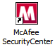
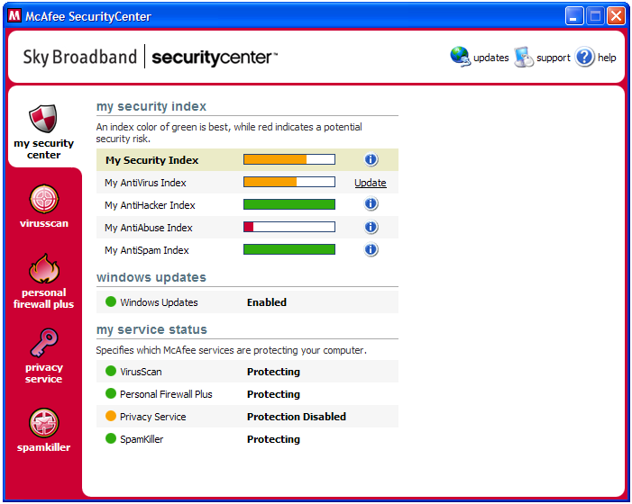
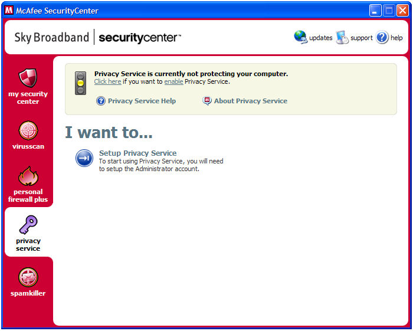
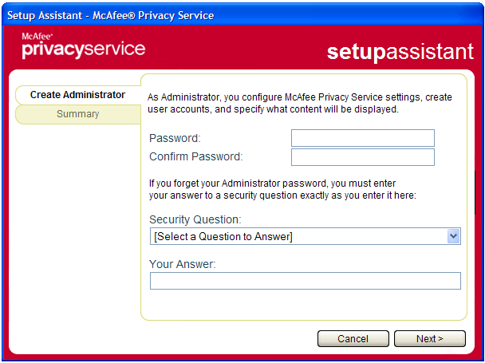
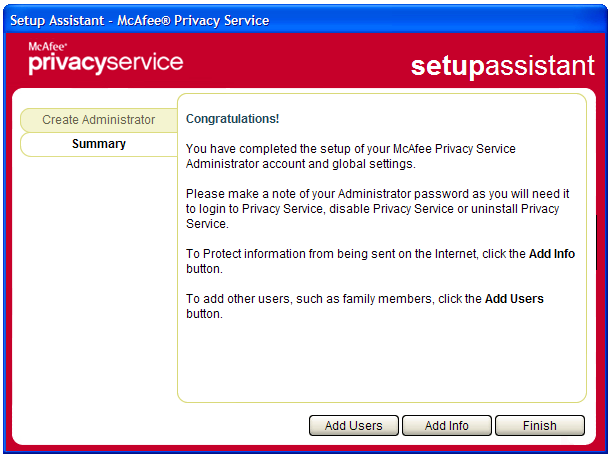
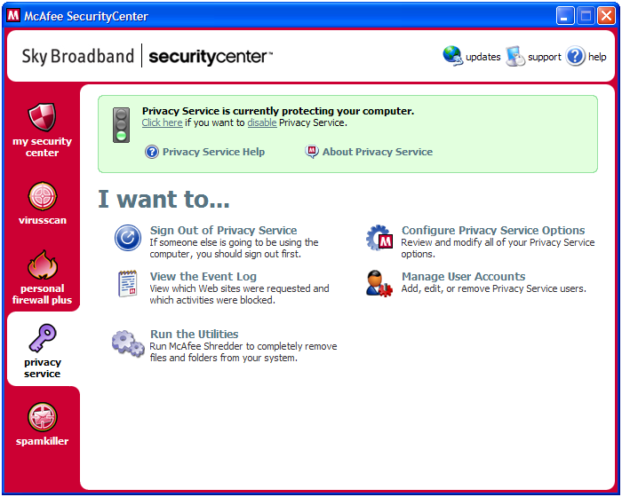
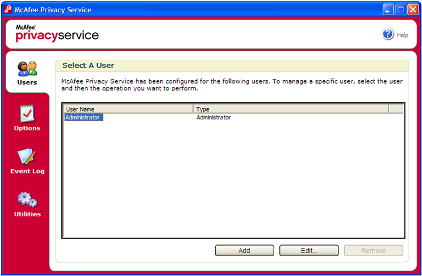
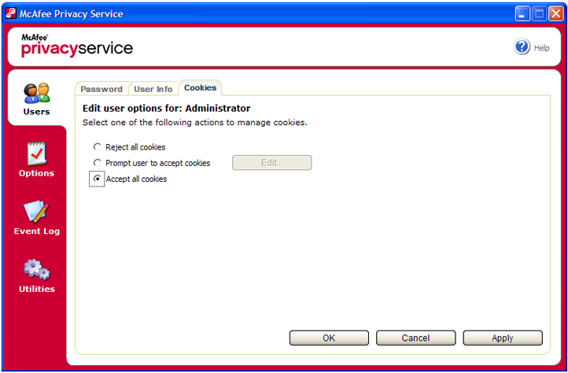
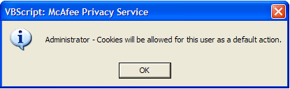

Step 2
How to check cookie settings in McAfee Privacy Service are not blocking your access to some websites
-
Double click on the McAfee Security Center icon on your desktop
 -
In the Security Center screen, click on the Privacy Service icon (with the image of a key) in the left hand navigation
 -
In the Privacy Service screen, select Setup Privacy Service (if you have already set up Privacy Service, skip this and the next two steps)
 -
In the SetupAssistant screen, choose and enter a password for your McAfee Privacy Service (you will need to keep this safe, as you will be asked to enter the Password when you want to access the Internet, if you choose to keep Privacy Service enabled. You will also need to select a Security Question and Answer (in case you forget your Privacy Service password).
 -
In the next screen, click Finish
 -
In the Security Center, click Manage User Accounts
 -
In the Privacy Service screen, select Administrator and click Edit
 -
In the next screen, select the Cookies tab, and change to Accept all cookies. Click Apply
 -
Click OK in the screen that pops up
